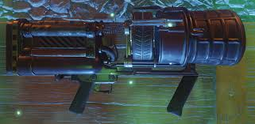

THUNDERGUN |
Mapas en los que puede salir son, kino der toten, asencion y five |
La unica forma de conseguirla en estos mapas es mediante a la caja misteriosa |
 |
RAYGUN MARK II |
Mapas en los que puede salir todos de la colección de zombies chronicles |
Solo se puede tener si tienes la versión de zombies Chronicles y sale mediante tiros de la caja misteriosa |
|
SIERVO DE APOTICON |
Hay solo 2 mapas en los que se puede conseguir el siervo de apoticon que son Shadows of evil y Reveletions |
En shadows of evil se puede conseguir por caja o también consiguiendo las piezas para armar, en Reveletions solo sale por caja misteriosa |
|
BASTONES ELEMENTALES |
El unico mapa que se pueden conseguir es en origins en Der enseriche exiten estas versiones pero en arcos |
La unica forma que se pueden conseguir es contrando las piezas por medio de desafios, recompesas esparcidas por todo el mapa |
 |